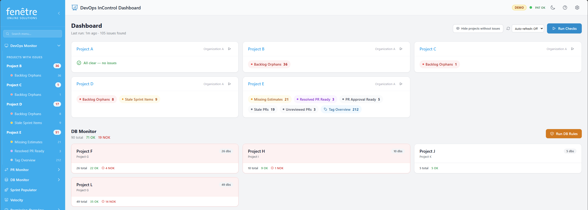

Dashboard
The Dashboard is your central overview. It shows all your monitored projects and highlights any issues that need attention. Think of it as a quick health check for your Azure DevOps backlog.

The main dashboard with project cards.
How to Use It
- Click Run Checks (top of the page) to scan all your projects. DevOps InControl will query Azure DevOps and show the results.
- Each project appears as a card. Coloured badges on the card indicate how many issues were found per check type.
- Click a badge or the project name to see the full list of flagged items (see Viewing Flagged Issues).
What the Colours Mean
| Colour | Meaning |
|---|---|
| Red | Issues found that likely need action (e.g. orphan items, stale work). |
| Amber | Warnings — items that may need attention soon. |
| Blue | Informational — items ready for the next step (e.g. PRs ready to approve). |
| Green | All clear — no issues found for this check. |
Features
Auto-Refresh
Use the refresh dropdown in the top-right to have the dashboard re-run checks automatically at a set interval (1, 5, 10, or 30 minutes). Select Off to refresh only when you click the button.
Hide Clean Projects
Toggle Hide projects without issues to focus only on projects that have flagged items. Projects with a clean bill of health are temporarily hidden.
Database Monitor Summary
If you have database monitoring configured, a summary section at the bottom shows the rule check results across your DB projects.
What You Can Change
| Setting | Where to Find It |
|---|---|
| Which projects appear | Configuration screen — add or remove projects. |
| Which checks run per project | Configuration screen — enable or disable individual checks. |
| Auto-refresh interval | Dropdown on the Dashboard itself (top-right). |
Tip
The timestamp below the title shows when checks were last run. If it looks outdated, click Run Checks to get fresh results.